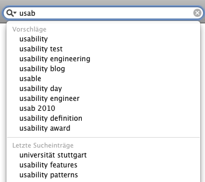

| Usability Pattern | Auto-Vervollständigung |
|---|---|
| Alias | Auto-Completion |
| Problem | Benutzer möchten Eingabewerte frei eingeben, die aus einer großen Menge möglicher Eingabewerte stammen. |
| Lösung |
Schlage Benutzern während der Eingabe mögliche geeignete Eingabewerte vor. Lasse Benutzer den Eingabewert zunächst frei eingeben. Zeige während der Eingabe automatisch Vorschläge für mögliche Eingabewerte an, die die bisherige Eingabe vervollständigen (z. B. durch Einblendung neben oder unterhalb des Eingabefelds). Die vorgeschlagenen Werte sollten zum bisher eingegebenen Wert passen bzw. diesen vervollständigen. Auch Eingabewerte aus früheren Eingabeschritten (Eingabehistorie) sind ggf. sinnvolle Vorschläge. Die Vorschläge sollten dabei je nach Aufgabenstellung geeignet sortiert werden, so dass z. B. die als am wahrscheinlichsten angenommenen Vorschläge oben in einer Vorschlagsliste erscheinen. Vorgeschlagene Werte müssen in jedem Fall gültige Eingabewerte sein. Erlaube Benutzern, einen der Vorschläge direkt als Eingabewert zu übernehmen. Wenn das System auch frühere Eingabewerte vorschlägt, erlaube Benutzern, die Eingabehistorie zu löschen. |
| Illustration | Eine Internet-Suchmaschine erlaubt Benutzern, Suchbegriffe frei einzugeben. Bereits während der Eingabe werden mögliche Vervollständigungen des bisherigen Eingabewerts eingeblendet, also Suchbegriffe, die eine große Zahl von Treffern versprechen. |
| Beispiele |
Apple Safari 5 (Web-Browser): Suche Benutzer können in Safari über ein separates Suchfeld Suchbegriffe für eine Internet-Suche eingeben. Safari blendet dabei automatisch Vervollständigungen der Eingabe ein; zusätzlich werden auch die vom Benutzer zuletzt gesuchten Suchbegriffe vorgeschlagen (im Bild unten als „Letze Sucheinträge“). Benutzer können einen der vorgeschlagenen Suchbegriffe auswählen oder den gewünschten Suchbegriff weiter manuell eingeben.  Automatische Vervollständigung von Suchbegriffen in Safari Eclipse Java IDE: Automatische Vervollständigung von Java-Anweisungen Die Entwicklungsumgebung Eclipse bietet Benutzern eine automatische Vervollständigung von Anweisungen im Java-Quellcode. Dabei zeigt Eclipse mögliche Ergänzungen der bisherigen Eingabe in einer Liste an, entweder auf expliziten Benutzerwunsch (Tastenkombination) oder automatisch nach einer kurzen Wartezeit. Benutzer können einen Vorschlag auswählen und die bisherige Eingabe so ergänzen. Die Vorschläge sind kontextabhängig, Eclipse schlägt nur zulässige Ergänzungen vor. Ergänzen Benutzer ihre Eingabe manuell (durch weiteres Eintippen), aktualisiert Eclipse die Vorschlagsliste automatisch. |
| Nutzungskontext |
|
| Begründung | Benutzer können dank Auto-Vervollständigung die gewünschten Eingabewerte auswählen, anstatt sie vollständig einzugeben. Sie können somit effizienter mit dem System arbeiten. Da zudem sinnvolle oder häufig verwendete gültige Eingabewerte vorgeschlagen und angezeigt werden, machen Benutzer weniger unerwünschte oder fehlerhafte Eingaben. |
| Risiken, Nachteile, Kosten |
Jede Form der Vervollständigung benötigt Rechenzeit. Die Auto-Vervollständigung von Eingabewerten kann deshalb zu für den Benutzer spürbaren und somit unerwünschten Verzögerungen bei der Eingabe führen. Benutzer können den Eindruck gewinnen, dass sie nur aus den vorgeschlagenen Eingabewerten auswählen können, obwohl auch eine freie Eingabe zulässig ist. Die Vorschläge müssen der Aufgabe angemessen und sinnvoll sortiert sein; unbrauchbare Vorschläge können Benutzer bei der Arbeit stören oder verärgern. |
| Anforderungserhebung |
Identifiziere Eingaben, die automatisch vervollständigt werden können.
|
| Anforderungsspezifikation |
Spezifiziere globale Vorgaben für den Einsatz des Usability Patterns „ Auto-Vervollständigung “:
Spezifiziere globale Funktionen (Use Cases) für den Einsatz des Usability Patterns „ Auto-Vervollständigung “:
Spezifiziere, für welche Interaktionen das Usability Pattern „ Auto-Vervollständigung “ eingesetzt wird. Annotiere und ergänze dazu vorhandene Use Cases :
|
{kind=link}
{kind=link}